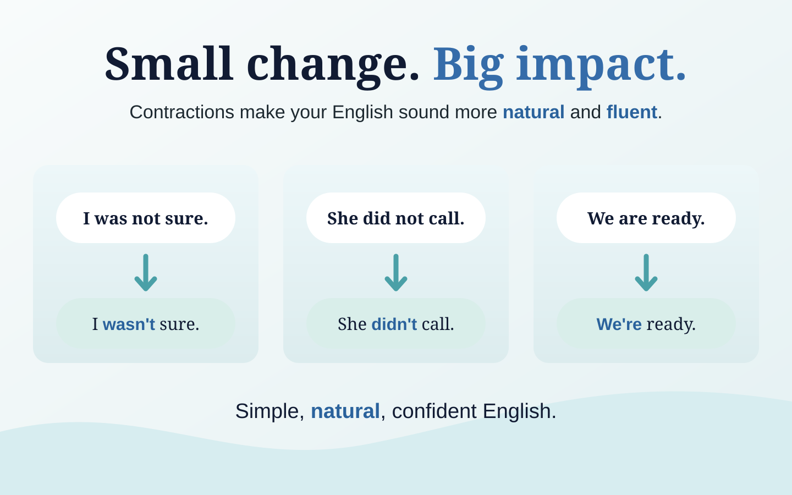

Contractions do not make your grammar more advanced. They make your spoken English sound more natural, connected and fluent — which is often exactly what an advanced learner is trying to achieve.
“Was not” is correct. “Wasn't” sounds more natural.
I hear this all the time with learners who already have good grammar. They produce a sentence that is technically correct, but it sounds unusually careful:
I was not sure if the meeting was still happening.
Nothing is wrong with that sentence. But in normal conversation, a native speaker is much more likely to say:
I wasn't sure if the meeting was still happening.
That tiny change affects the rhythm of the whole sentence. Instead of giving equal weight to was and not, you compress them into one natural unit: wasn't.
Why contractions make such a difference
Natural spoken English is not pronounced as a series of perfectly separate dictionary words. We connect, reduce and compress language constantly. Contractions are one of the clearest examples of this.
- Fewer heavy syllables: the sentence moves more smoothly.
- More natural rhythm: important words receive the stress instead of small grammar words.
- Less textbook-like speech: your English sounds more conversational and spontaneous.
- Greater fluency: you can move through familiar structures without stopping to pronounce every word individually.

The grammar has not become more complicated. The delivery has become more natural.
Simple upgrades you can use immediately
Listen to what happens to the stress
Take this sentence:
I was not sure what time you were arriving.
If you pronounce every word strongly, the sentence can sound stiff. Now contract the grammar words:
I wasn't sure what time you were arriving.
The key message — sure, time, arriving — becomes easier to hear because the grammar around it takes up less space. This is one reason contractions and pronunciation are closely connected.
Are contractions always “better English”?
No. “Was not” and “wasn't” are both grammatically correct. The difference is mainly style, emphasis and context.
In everyday speech, meetings, interviews and normal professional conversation, contractions are extremely common. But you might deliberately use the full form when you want strong emphasis:
I did not say that.
Here, the speaker may want to stress not. The full form makes that contrast stronger.
Formal legal wording, highly formal writing or very deliberate emphasis may also favour full forms. The goal is not to contract everything mechanically. The goal is to make contractions your natural default in ordinary speech.
The learners who benefit most from this
This is especially useful if your English is already intermediate or advanced but people still describe your speech as careful, formal or slightly unnatural. You may not need a huge vocabulary upgrade. Sometimes your grammar is already good — your speech simply needs to become more connected.
That is why I like contractions as a fluency tool: they are simple, but the improvement is immediately audible.
A 60-second practice
Say each full form once, then repeat it three times using the contraction. Do not rush. Focus on making the contracted form feel like one unit.
- was not → wasn't
- did not → didn't
- are not → aren't
- I am → I'm
- I have → I've
- we are → we're
- you will → you'll
- would not → wouldn't
Then put them into sentences you genuinely use at work or in daily life. That is where the change starts becoming automatic.
The takeaway
If you want a quick way to elevate your spoken English, do not always look for a more complicated word or grammar structure. Sometimes the best improvement is much smaller.
Was not → wasn't. Did not → didn't. I am → I'm.
Simple changes like these can make your English sound more natural, fluent and confident almost immediately.